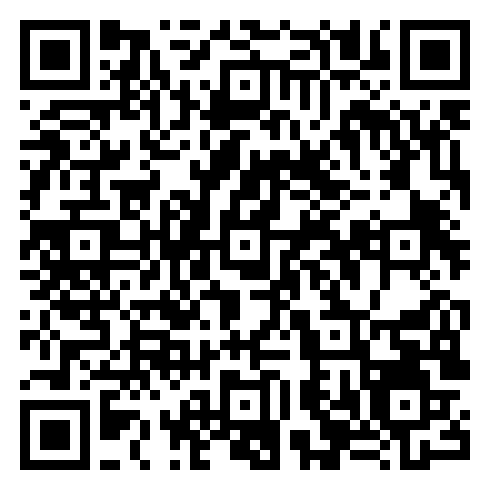

Esta app te ayuda a ubicar estrellas brillantes visibles desde tu zona usando tu ubicación, fecha y hora.
Uso rápido: permite la ubicación, actualiza el cielo y apunta la parte superior del mapa hacia el norte.
StarView HUD convierte tu celular en una guía visual del cielo. Te muestra qué estrellas brillantes pueden estar arriba de ti según tu ubicación y la hora.
El círculo representa el cielo sobre ti: arriba es Norte, derecha Este, abajo Sur e izquierda Oeste.
Consejo: busca primero las estrellas más brillantes y altas.
Si hay mucha luna, algunas estrellas débiles se verán menos.
Elige hacia dónde estás mirando y la app te sugiere estrellas cercanas a esa dirección.
Clasificación práctica según altura y brillo aparente.
Eventos aproximados y de referencia para observación casual.
Módulo experimental: orientación aproximada para observación casual, no cálculo astronómico profesional.

Comparte este QR para que otras personas abran StarView HUD desde su celular.
Link de campaña:
Android / Chrome: toca los tres puntos ⋮ y elige Agregar a pantalla principal.
iPhone / Safari: toca compartir y luego Agregar a pantalla de inicio.
StarView HUD es un experimento de Aire Acondicionado y Confort Lab, creado para explorar tecnología, orientación y visualización desde el celular.
La ubicación se usa solo en tu navegador para calcular el mapa. No se guarda en servidores ni se manda a una base de datos. La página registra visitas anónimas con Google Analytics para medir uso general de la app.